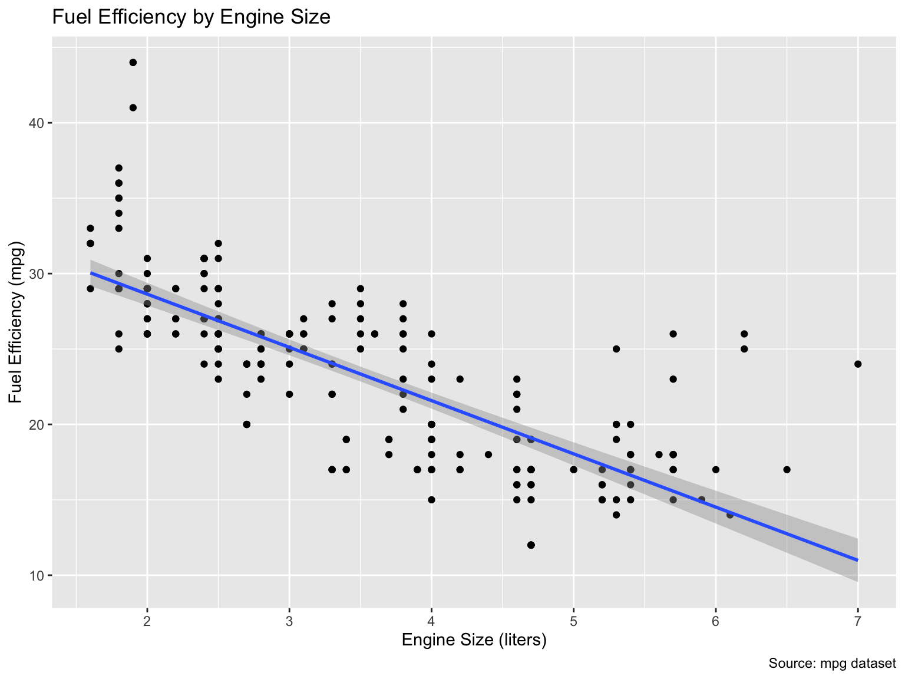
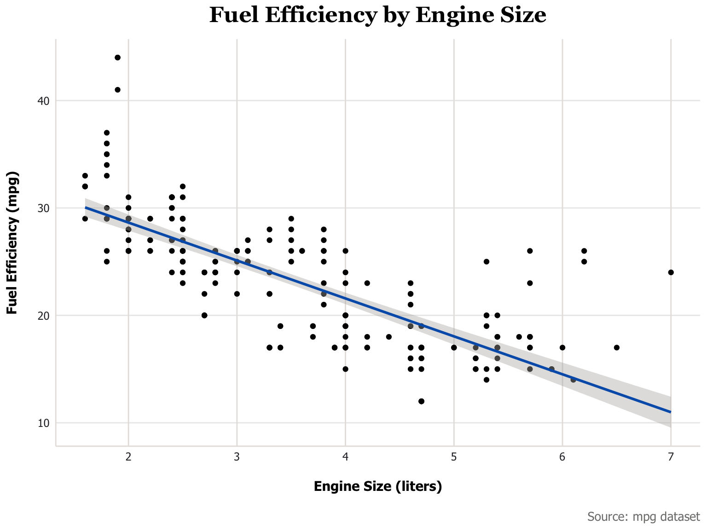
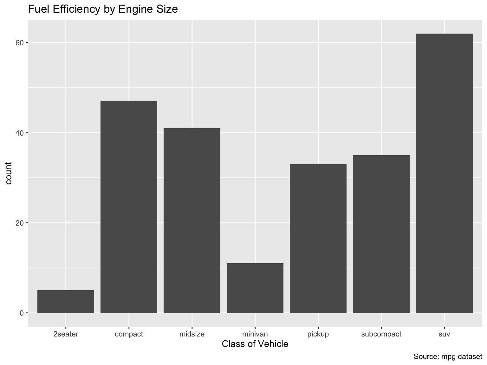
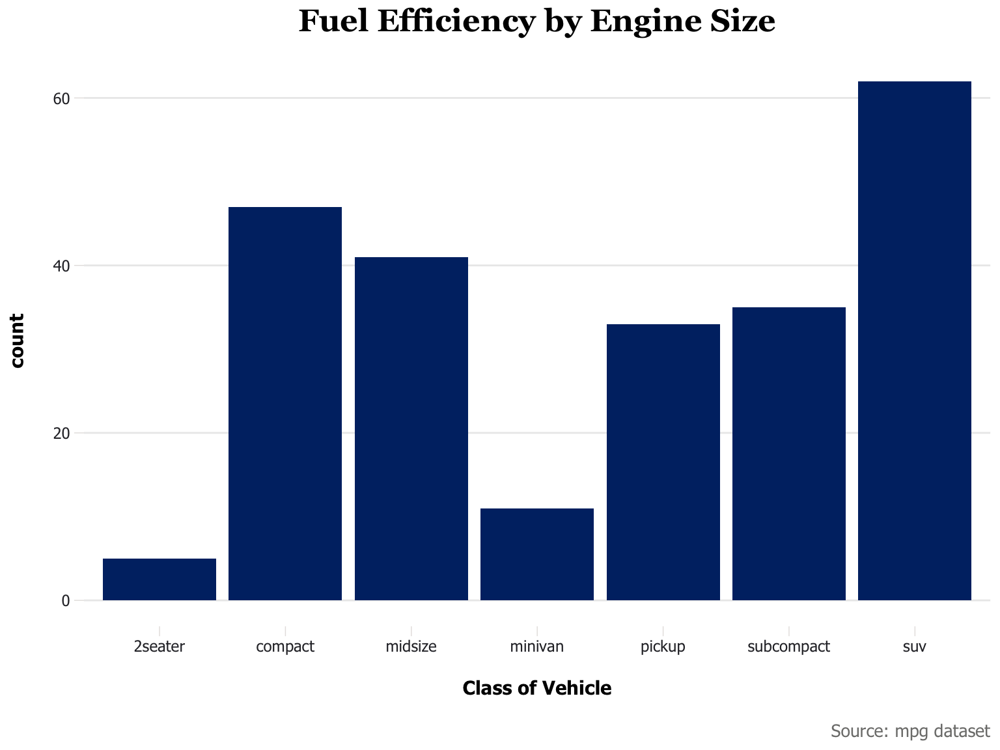

source(here::here("examples", "scaffold.R"))ggplot Themes and Staying DRY
Staying DRY: Don’t Repeat Yourself
- You may have noticed that as we create more and more notebooks and plots, we repeat a lot of code.
- You might also notice that a lot of styling decisions in
ggplotrequire being repeated across multiple plots. - In this example we will give you some techniques for making your code more DRY.
Scaffolding
- When you notice that you are repeating a lot of code, a nice and easy pattern is to create a “scaffold” file (e.g,. `scaffold.R) that contains the code you are repeating
- In this file you could include your
theme.Rfile, but also common library imports, functions, and so on. - All you then need to do is put something like
source("scaffold.R")in your setup block.
Theme File
- I have created a
scaffold.Rfile and atheme.Rfile in theexamplesdirectory - The
scaffold.Rfile loads libraries and sources thetheme.Rfile - Run it in a set up block, like below:
- Now you don’t need to repeat yourself at the top of every new notebook.
Using The Theme
- This file has a
theme_jhu()functions - It extends
theme_minimal()and adds a few customizations that accord with the https://brand.jhu.edu/visual-identity/colors/
Make A Plot
Below we’ll make a simple plot and quickly encounter our usual issues with styling.
p <- ggplot(mpg, aes(x = displ, y = hwy)) +
geom_point() +
geom_smooth(method = "lm") +
labs(
title = "Fuel Efficiency by Engine Size",
caption = "Source: mpg dataset",
x = "Engine Size (liters)",
y = "Fuel Efficiency (mpg)"
)
p
Using A Theme
- In our
theme.Rfile we have a function calledtheme_jhu()that looks like this - Notice how annoying it would be to include this in every plot.
theme_jhu <- function() {
theme_minimal(base_family = "Tahoma") +
theme(
plot.title = element_text(
family = "Georgia", size = 18, hjust = 0.5, face = "bold",
margin = margin(b = 10)
),
plot.subtitle = element_text(
hjust = 0.5, family = "Tahoma", size = 12,
margin = margin(t = 5, b = 15)
),
plot.caption = element_text(
family = "Tahoma", size = 10, color = colors$Gray3,
margin = margin(t = 15)
),
axis.text.y = element_text(
family = "Tahoma", size = 9, color = colors$Gray5
),
axis.text.x = element_text(
family = "Tahoma", size = 9, color = colors$Gray5
),
axis.title.y = element_text(
family = "Tahoma", size = 11,
margin = margin(r = 15),
face = "bold"
),
axis.title.x = element_text(
family = "Tahoma", size = 11,
margin = margin(t = 15),
face = "bold"
),
axis.line.x = element_line(color = colors$Gray1, linewidth = 0.5),
axis.line.y = element_line(color = colors$Gray1, linewidth = 0.5),
panel.grid.major.x = element_line(
color = colors$Gray1, linewidth = 0.5, linetype = "solid"
),
panel.grid.minor = element_blank()
) +
update_geom_defaults("smooth", list(
color = colors$Blue,
fill = colors$Gray2
))
}Applying The Theme
- All we need to do to apply the theme is add
+ theme_jhu()to the end of the plot code - This will apply the theme to the plot
- Notice how we now have JHU fonts, better spacing, etc.
p + theme_jhu()
Types of Plots
- Sometimes you want to apply a theme to a specific type of plot
- In
theme.Rwe have a function calledtheme_jhu_bar()that looks like this
theme_jhu_bar <- function() {
theme_jhu() +
update_geom_defaults("bar", list(fill = colors$HopkinsBlue)) +
theme(
axis.line.x = element_blank(),
axis.line.y = element_blank(),
axis.ticks = element_line(color = colors$Gray1, linewidth = 0.25),
axis.ticks.length = unit(0.2, "cm"),
panel.border = element_blank(),
panel.grid.major.x = element_blank(),
panel.grid.minor = element_blank()
)
}Make A Bar Plot
- Let’s make a bar plot
p_bar <- ggplot(mpg, aes(x = class)) +
geom_bar() +
labs(
title = "Fuel Efficiency by Engine Size",
caption = "Source: mpg dataset",
x = "Class of Vehicle"
)
p_bar
Applying The Bar Theme
All we need to do to apply the bar theme is add + theme_jhu_bar() to the end of the plot code
p_bar + theme_jhu_bar()